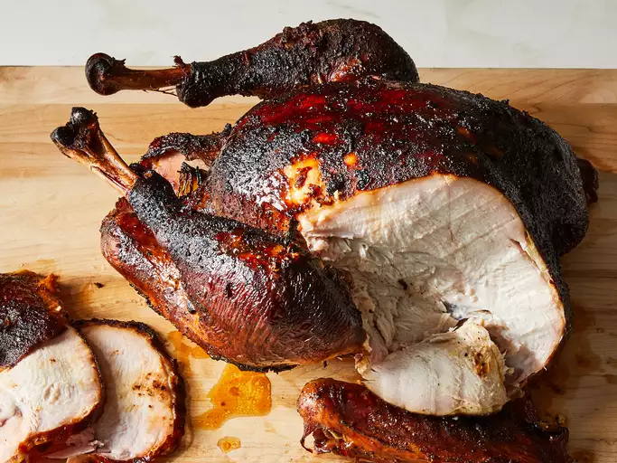

Turkey in a Smoker

About
Learn how to smoke a turkey with this great recipe. It's nearly impossible to cook a large bird on a barbecue
grill so a smoker is best for this. It may not be your traditional holiday turkey, but this moist, tender,
hickory-flavored turkey will be surely be met with rave reviews.
Ingredients
- 1 (10 pound) whole turkey, neck and giblets removed
- 4 cloves garlic, crushed
- 2 tablespoons seasoned salt
- ½ cup butter
- 2 (12 fluid ounce) cans cola-flavored carbonated beverage
- 1 medium apple, quartered
- 1 medium onion, quartered
- 1 tablespoon garlic powder
- 1 tablespoon salt
- 1 tablespoon ground black pepper
- 2 cups hickory wood chips, or more as needed (Optional)
Steps
- Preheat a smoker to 225 to 250 degrees F (110 to 120 degrees C).
- Rinse turkey under cold water, and pat dry.
-
Rub crushed garlic over the outside of the turkey, and sprinkle with seasoned salt. Transfer to a disposable
roasting pan.
-
Fill the turkey cavity with butter, cola, apple, onion, garlic powder, salt, and pepper. Cover turkey
loosely with foil.
-
Add wood chips to the smoker according to the manufacturer's directions. Place the roasting pan in the
preheated smoker. Smoke the turkey, basting every 1 to 2 hours with juices from the bottom of the roasting
pan, for 5 hours.
-
Add more wood chips if desired. Continue smoking and basting, until turkey is no longer pink at the bone and
the juices run clear, about 5 more hours. An instant-read thermometer inserted into the thickest part of the
thigh, near the bone, should read 180 degrees F (80 degrees C).